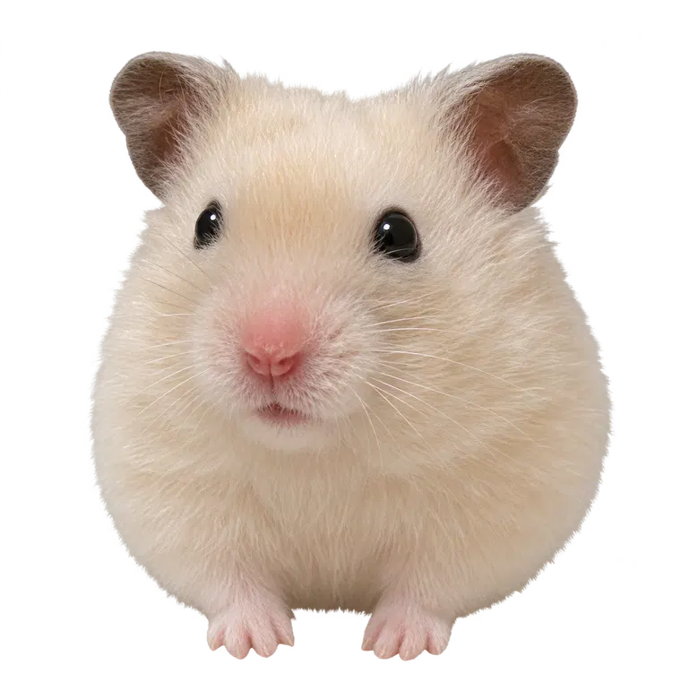
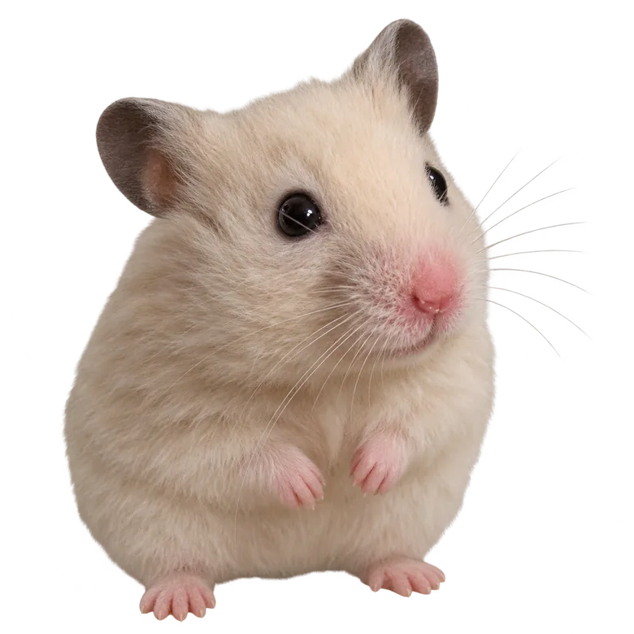
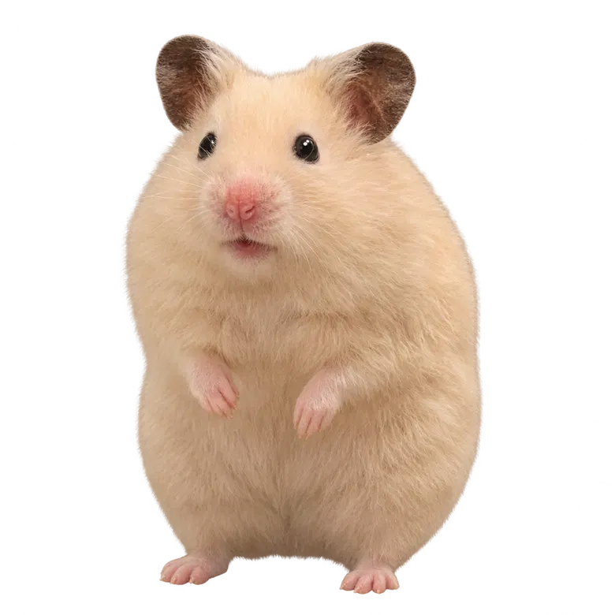
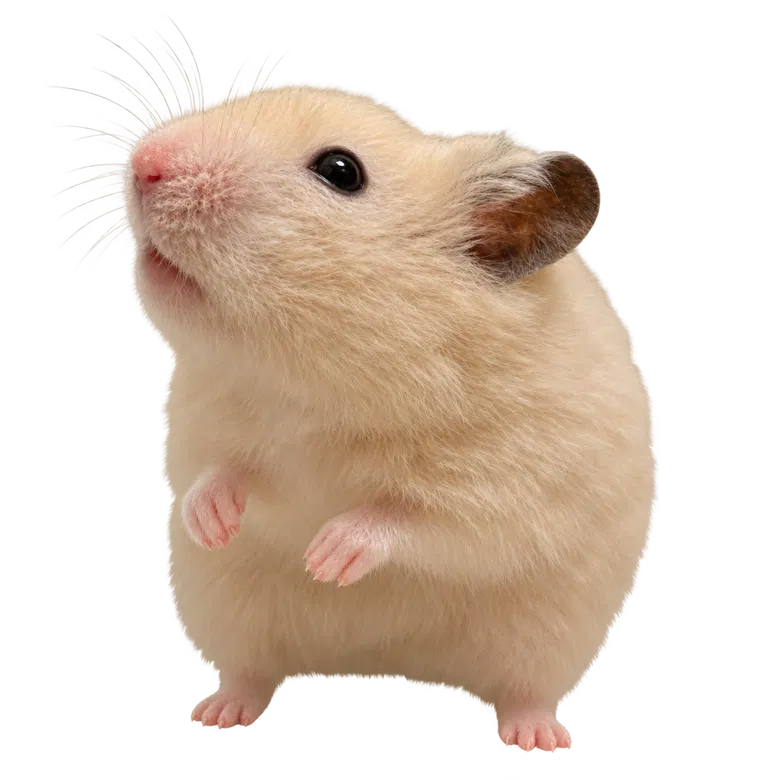
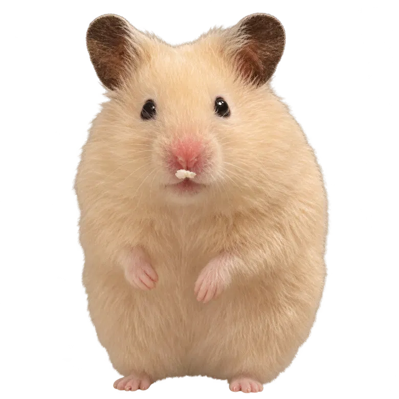
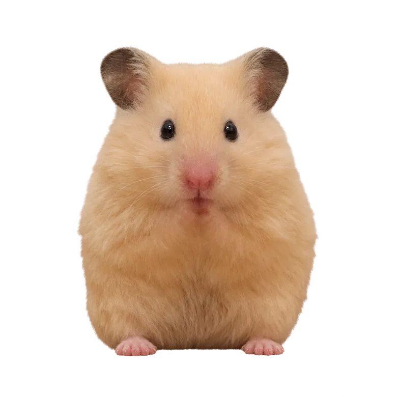
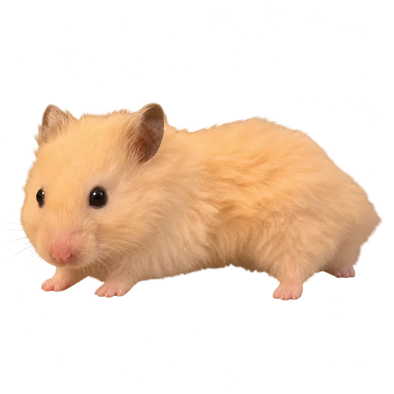

WELCOME TO THE SMALL WORLD OF
HAM
CELLO!
小さな体に、大きなプライド。
横浜生まれ。
東京育ち。
東京育ち。
PORT OF
YOKOHAMA
YOKOHAMA

ONE WAY TICKET / HAMCELLO RAILWAY夕日行きの、
列車にのる。
列車にのる。
DEPART
YOKOHAMAARRIVE
TOKYO
YOKOHAMAARRIVE
TOKYO
TRAIN
001
001
PORT OF YOKOHAMA — TOKYO TERMINAL
TOKYO
01
01
TOKYO / ASSOCIATION前歯が出てるやつは
前歯が出てるやつは
大体友達

NIGHT
TOKYO
TOKYO
THE CITY DOES NOT SLEEP気づけば、
気づけば、
東京は夜。
夕焼けの街が、少しずつ明かりをつける。
電車はそのまま、次の朝へ。

OVERNIGHT EXPRESS / INTO THE MORNING夜を越えて、
夜を越えて、
石川へ。
電車に乗ったまま、遠くの空が明るくなる。
街のビルが消えると、山並みが広がっていく。
DAY
BREAK
BREAK
WELCOME TO石川県ISHIKAWA PREF.
FROM THE NIGHT TRAIN / ISHIKAWA朝がきた。
朝がきた。
山も、街も。
増えていく山並み。
窓の外に現れる、兼六園と古い町並み。
兼六園 KENROKUEN
古い町並み OLD TOWN

ONE VERY SMALL BEGINNING山の上に、
山の上に、
種がひとつ。
石川の山を進むと、地面に小さな種が。
もう少し進むと、何かが動きはじめる。
THE JOURNEY TURNS UPWARD / SCROLL TO GROW

CUCUMBER SKY雲の上に、
きゅうりの世界。
きゅうりの世界。
ここに種が、ひとつ。
SCROLL TO GROW
石川の山から、雲の上へ。
02 / ABOVE THE CLOUDSきゅうり
きゅうり
天国。
好きな食べ物、きゅうり。
ここでは、きゅうりがすべて。

無限きゅうり栽培中
HAMCELLO TASTE INSTITUTE舌の肥えた
舌の肥えた
ネズミ。
化学調味料入りのものは、
おいしいと思っていない。
判定基準は、本人の舌。
化学調味料
不採用
NOT APPROVED
不採用
NOT APPROVED
審査員：ハムチェッロ
審査基準：自分の好み
審査基準：自分の好み
THE SUPREME CODE OF CONDUCT礼儀を
礼儀を
わきまえよ。
上下関係には厳格。
わきまえない者には容赦がない。
礼儀検問所
RULE
No.01
RULE
No.01
THE HAMCELLO INCIDENT ARCHIVE / CASE 005
WANTED
かわいい顔に、油断するな。
礼儀を知らない相手には激怒。
怒りのあまり自分がわからなくなる。
これまで何度も流血沙汰を起こしている。
怒りのあまり自分がわからなくなる。
これまで何度も流血沙汰を起こしている。
HANDLE WITH
RESPECT
RESPECT
速報
また礼儀問題か？
目撃情報を募集中
また礼儀問題か？
目撃情報を募集中

THE END OF THE ROADかわいい。
かわいい。
しかし、
無害とは
限らない。
きゅうりを愛し、礼儀を重んじる。
これがハムチェッロという生き物。
前歯が出ているなら、
また会おう。
また会おう。


HAMCELLO WORLD
THE ADVENTURE
00 / YOKOHAMA
スクロールして冒険する
横浜から東京へ